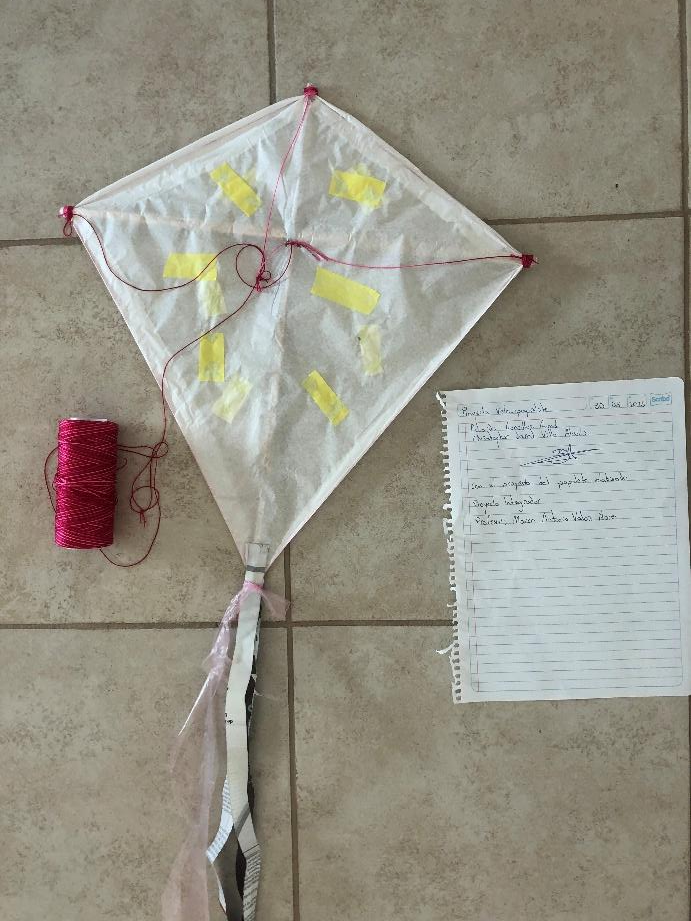

Datos que hablan. Decisiones con base científica.
El Velocipapalote es un poryecto que consiste en la determinacion de de cambios de meteorologicos apartir de la vellocidad del viento y la humedad que hay en el.

En la actualidad, la estadística y el análisis de datos son herramientas fundamentales para conocer fenómenos que suceden a nuestro alrededor. La capacidad de recolectar, procesar e interpretar información permite que se pueda comprender fenómenos que suceden alrededor y hacer predicciones. Es por eso que surge la necesidad de contar con un laboratorio equipado y especializado que permita a los estudiantes desarrollar habilidades y realizar estudios estadísticos orientados al comercio.